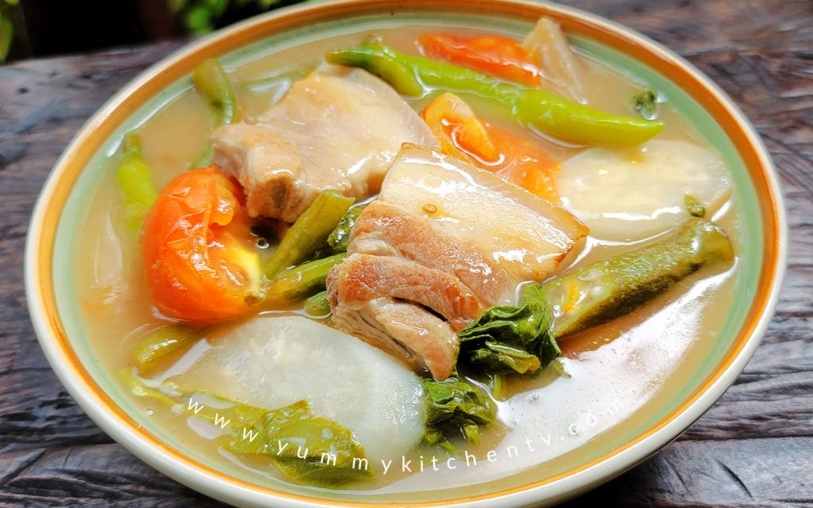

Sinigang Recipe

Ingredients:
- 2 lbs pork ribs or belly, cut into chunks
- 8 cups water
- 1 medium onion, quartered
- 2 tomatoes, quartered
- 1 packet tamarind soup base mix
- 1 daikon radish, sliced
- 1 eggplant, sliced
- 10 string beans, cut into 2-inch pieces
- 1 bunch kangkong (water spinach)
- 2-3 green chili peppers
- Salt and fish sauce to taste
Instructions:
- In a large pot, bring water to a boil and add pork, onion, and tomatoes.
- Simmer for 30-40 minutes until pork is tender.
- Add the tamarind soup base mix and stir well.
- Add radish, eggplant, and string beans. Cook for another 5 minutes.
- Add kangkong and green chili peppers, then simmer for 2 more minutes.
- Season with salt and fish sauce to taste.
- Serve hot with steamed rice. Enjoy!
Back to Menu